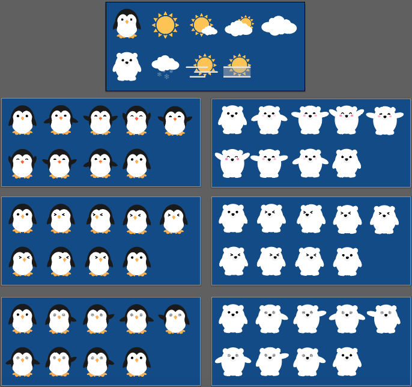

What data am I curious about? One of the things that came to mind was bringing information from two places very far from each other in real life and have them sit side by side on the internet.
Hence came the idea for Polar Opposites.
As I built out the wireframe, I was faced with the question of how far to go. The possibilities were so limitless that I realised, with a generalised format and enough information, this could be a useful site or application for travellers or just curious individuals who want to compare weather from two different locations around the world. As someone who travels internationally a lot, I've realised that of the many weather applications out there, very few have a simple comparison feature.
Imagine if, as well as these, there were also pandas, elephants, and kiwi birds.
Of course, due to the limits of API licensing and time, what yI have below is only a sample of what a generalised global weather site would look like. But I hope you enjoy it and that I'll have the chance to develop what i have further in the future!